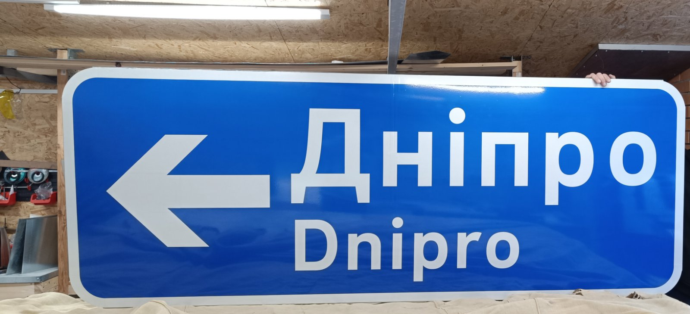

ДЗІП і великоформатні покажчики
Потрібен покажчик напрямку, назва населеного пункту, схема об'їзду, інформаційний щит або знак, якого немає у стандартному каталозі?
Виготовимо його за схемою організації руху, технічним завданням, кресленням або вашим ескізом. Визначимо конструкцію, розмір і клас плівки під умови встановлення.
Що виготовляємо
- покажчики напрямків;
- назви населених пунктів та об'єктів;
- схеми об'їзду;
- інформаційні й сервісні щити.
- Від вас
- Схема ОДР, тексти й напрямки, місце встановлення.
- Від нас
- Макет на погодження, підбір розміру та плівки, прорахунок, готовий знак і документи на партію.